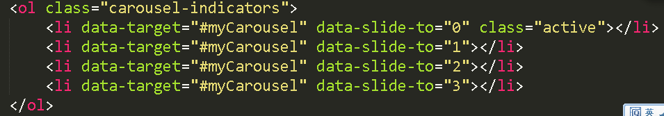
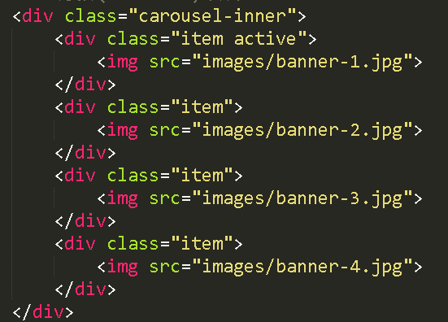
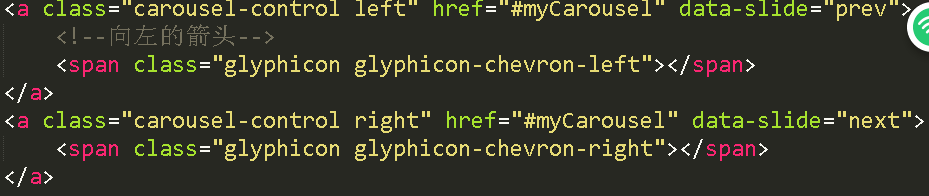

分享人：陈红远
所谓轮播图是以实际出现的状态而产生的词组，就是在网站做一个区域，区域内一般为几张不同的图片，以轮换播放的方式，进行展示的过程
我了解的方式有bootstrap的轮播，用纯css，用css3，还有用js写出的轮播，除了bootstrap，其他的方式还没有使用过，所以今天主要讲下bootstrap实现的轮播图
一个轮播图片主要包括三个部分:
1,轮播的图片
2,轮播图片的计数器
3,轮播图片的控制器
在 Bootstrap 框架中采用 carousel 样式，并且给这个容器定义一个 ID 值，方便后面采用 data 属性来声明触发。
在容器 div.carousel 的内部添加轮播图片计算器，采用 carousel-indicators 样式，其主要功能是显示当前图片的播放顺序(有几张图片就放置几个li)，一般采用有顺列表来制作
data-slide-to 属性：用来传递某个帧的下标，比如 data-slide-to="2"，可以直接跳转到这个指定的帧（下标从0开始计）
轮播图整个效果中，播放区是最关键的一个区域，这个区域主要用来放置需要轮播的图片。这个区域使用carousel-inner样式来控制，而且其同样放置在 carousel 容器内，并且通过 item 容器来放置每张轮播的图片
很多时候轮播图片还具有一个向前播放和向后播放的控制器。在 Carousel 中通过 carousel-control样式配合 left 和 right 来实现。其中left表示向前播放，right表示向后播放。其同样放在carousel容器内
data-slide属性：取值包括prev，next，prev表示向后滚动，next表示向前滚动
感谢大家观看
BY : 陈红远